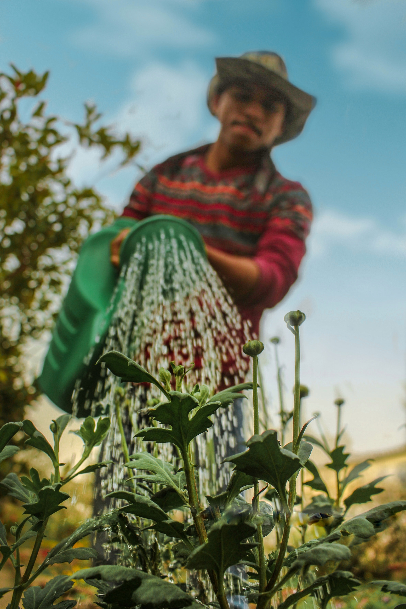

Marbury Road Edible Garden
Born out of a need for food security in Stockport, the group have cultivated a space for the local community to learn, to grow and harvest crops freely!
JOIN USMarbury Road Edible Garden is a volunteer-run community group focusing on gardening and growing food for the community. It also runs wellbeing workshops, including yoga, mindful watercolour painting, sound and healing meditation, and more!